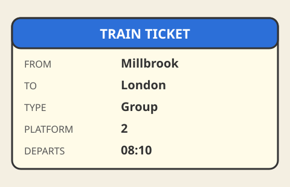

Zug und U-Bahn: Fahrkarten und Gleise
Mit einem KI-Tutor lernen
Ein KI-Tutor erklärt dir diese Seite und hilft dir bei den Aufgaben. Wähl deinen Assistenten:
Mit Claude öffnen Mit ChatGPT öffnen Mit Mistral Vibe öffnen
Du nutzt dein eigenes Konto beim Anbieter. Der Assistent ist kein Angebot von lernapps.net: lernapps liefert nur Inhalte und Aufgaben. Die Wahl gilt für alle Seiten, nur auf diesem Gerät.
Sophie schreibt an Peter
Morgen fährt die Klasse für zwei Tage nach London. Sophie schreibt Peter schon heute eine Nachricht: „We go to London … train.“
Aufgabe
Lösung
by richtige Antwort
Mit Verkehrsmitteln steht by und danach kein Artikel (by train, by bus).
with
with bedeutet „mit“ bei Personen und Dingen, die man hält (with a friend). Für Verkehrsmittel gilt by.
on
on train ist ohne Artikel nicht richtig. Wer im Zug sitzt, sagt on the train. Für „mit dem Zug“ brauchst du by.
Für Verkehrsmittel steht by und das Verkehrsmittel ohne Artikel.
Das kannst du danach: Du liest einen Chat und ein Gespräch am Schalter, nennst Verkehrsmittel und kaufst auf Englisch eine Fahrkarte. Die Uhrzeit kennst du von der Seite davor.
Der Klassenchat und das Gespräch am Schalter
| Englisch | Deutsch |
|---|---|
| meet | sich treffen |
| leave | abfahren, losfahren |
| platform | Gleis |
| journey | Reise, Fahrt |
| the Tube | die Londoner U-Bahn |
| day pass | Tageskarte |
| single ticket | einfache Fahrt |
| return ticket | Hin- und Rückfahrkarte |
| clerk | Angestellter am Schalter |
| group ticket | Gruppenfahrkarte |
| arrive | ankommen |
| window | Fenster |
| late | spät, zu spät |
| wait | warten |
| Single or return? | Einfache Fahrt oder Hin- und Rückfahrt? |
Der Klassenchat (Peter liest und schreibt von zu Hause mit)
- Mr Hill: Good morning, everyone! Please meet at Millbrook station at half past seven. Our train leaves from platform 2 at ten past eight.
- Amir: Do we need tickets?
- Mr Hill: I have the group ticket for the journey to London. It is only for the way there. For the way home, everybody buys a ticket in London. In London we use the Tube, the Underground. Each of you needs a day pass, and we buy them at the station there.
- Ellie: How long is the journey?
- Mr Hill: About two hours. We arrive in London at ten past ten.
- Sophie: Can I sit next to the window?
- Mr Hill: Of course. But please don't be late. The train doesn't wait!
- Peter: Take a photo of the Tube for me, Sophie!

Die Gruppenfahrkarte der Klasse (erfunden). So sehen die Angaben aus.
Quelle: eigene Zeichnung. Lizenz: CC-BY-4.0.Am Schalter in London
- Sophie: Excuse me, I'd like a single ticket to Millbrook for tomorrow, please.
- Clerk: Single or return?
- Sophie: Single, please. The one at a quarter to six.
- Clerk: That's fifteen pounds, please. It leaves from platform 4.
- Sophie: Thank you!
Verstehen, belegen, anwenden
Aufgabe
Lösung
ten past ten richtige Antwort
Der Zug fährt um ten past eight ab und braucht etwa zwei Stunden.
ten past eight
Das ist die Abfahrt. Danach fragt „When does the train leave?“.
half past seven
Das ist die Zeit, zu der sich die Klasse am Bahnhof trifft.
Abfahrt um ten past eight, Ankunft zwei Stunden später um ten past ten.
Aufgabe
Lösung
Richtige Antwort: Die Aussage stimmt nicht.
Mr Hill hat nur die Gruppenfahrkarte für die Fahrt nach London. Die Karte für die Heimfahrt und die Tageskarten kauft die Klasse in London.
Aufgabe
Lösung
Richtige Antwort: Do we need tickets? – ob man Fahrkarten braucht; How long is the journey? – wie lange die Fahrt dauert; Can I sit next to the window? – ob man am Fenster sitzen darf
Die Fragen stehen im Chat. Do we need fragt nach der Notwendigkeit, How long nach der Dauer und Can I nach der Erlaubnis.
Aufgabe
Lösung
Zeile 2
In Zeile 2 fragt Amir nach den Tickets.
Zeile 3
In Zeile 3 geht es um die Tickets für den Zug und die Tube.
Zeile 5 richtige Antwort
Mr Hill antwortet in Zeile 5 „About two hours“ und nennt die Ankunftszeit.
Zeile 7
In Zeile 7 sagt Mr Hill, dass die Klasse nicht zu spät kommen soll.
Die Antwort auf Ellies Frage nach der Dauer steht in Zeile 5.
Aufgabe
Wähle das richtige Wort.
Tipp
Nach dem Verkehrsmittel steht kein Artikel.
- Wir fahren mit dem Bus zur Schule. → We go to school … bus.
- Ellie fliegt mit dem Flugzeug nach Dublin. → Ellie goes to Dublin … plane.
Lösung
- We go to school by bus.
- Ellie goes to Dublin by plane.
Aufgabe
Lösung
Die Fahrt geht von Fairfield nach Millbrook, nur in eine Richtung. richtige Antwort
Auf der Karte steht Single, das ist eine einfache Fahrt. Von steht vor Fairfield.
Die Fahrkarte gilt für Hin- und Rückfahrt.
Hin- und Rückfahrt heißt return. Hier steht Single.
Der Zug fährt von Gleis 2 ab.
Auf der Karte steht Platform 6, nicht 2.
Die Karte nennt Fairfield als Start, Millbrook als Ziel und Single als Art.
Aufgabe
Schreibe den Satz auf Englisch.
Tipp
Bei Fragen mit Which platform steht does vor dem Zug.
- Eine einfache Fahrt nach London, bitte.
- Von welchem Gleis fährt der Zug nach London ab?
Lösung
- A single ticket to London, please. (auch richtig: A single ticket to London.; A single to London, please.; A single to London.; A one-way ticket to London, please.; A one-way ticket to London.; A one-way to London, please.; A one-way to London.; One single ticket to London, please.; One single ticket to London.; One single to London, please.; One single to London.; One one-way ticket to London, please.; One one-way ticket to London.; One one-way to London, please.; One one-way to London.; I'd like a single ticket to London, please.; I'd like a single ticket to London.; I'd like a single to London, please.; I'd like a single to London.; I'd like a one-way ticket to London, please.; I'd like a one-way ticket to London.; I'd like a one-way to London, please.; I'd like a one-way to London.; I would like a single ticket to London, please.; I would like a single ticket to London.; I would like a single to London, please.; I would like a single to London.; I would like a one-way ticket to London, please.; I would like a one-way ticket to London.; I would like a one-way to London, please.; I would like a one-way to London.; Could I have a single ticket to London, please.; Could I have a single ticket to London.; Could I have a single to London, please.; Could I have a single to London.; Could I have a one-way ticket to London, please.; Could I have a one-way ticket to London.; Could I have a one-way to London, please.; Could I have a one-way to London.; Can I have a single ticket to London, please.; Can I have a single ticket to London.; Can I have a single to London, please.; Can I have a single to London.; Can I have a one-way ticket to London, please.; Can I have a one-way ticket to London.; Can I have a one-way to London, please.; Can I have a one-way to London.)
- Which platform does the train to London leave from? (auch richtig: Which platform does the train to London go from?; What platform does the train to London leave from?; What platform does the train to London go from?; From which platform does the train to London leave?; From what platform does the train to London leave?; Which platform does the London train leave from?; Which platform does the London train go from?; What platform does the London train leave from?; What platform does the train for London leave from?)
Selbst sprechen und schreiben
Aufgabe
Hör zu, sprich nach und nimm dich auf. Vergleiche dann mit dem Original.
Tipp
Hör den Satz zuerst. Sprich dann langsam nach und achte auf die Betonung bei ticket und Underground.
- I would like two tickets for the next train.KI
- Could you help me with the machine, please?KI
- Sophie takes the Underground to the hotel.KI
Zum Aufnehmen braucht diese Aufgabe JavaScript. Die Beispiele kannst du auch ohne anhören.
Lösung
- I would like two tickets for the next train.
- Could you help me with the machine, please?
- Sophie takes the Underground to the hotel.
Offene Aufgabe
Du bist am Bahnhof in Millbrook und willst mit dem Zug nach Oxford. Schreibe ein kurzes Gespräch zwischen dir und der Person am Schalter, vier bis sechs Zeilen: Fahrkarte, Gleis und Uhrzeit.
Eine gute Antwort enthält:
- Du bittest höflich um eine Fahrkarte und sagst, ob sie single oder return sein soll. Nachlesen
- Du fragst nach dem Gleis oder nach der Abfahrt mit einer richtigen Frage. Nachlesen
- Eine Uhrzeit steht auf Englisch im Gespräch. Nachlesen
- Es sind ganze Sätze, abwechselnd du und die Person am Schalter. (Form)
Lösung
You: Excuse me, a return ticket to Oxford, please. Clerk: That's twenty pounds. The train leaves at a quarter past nine. You: Which platform does it leave from? Clerk: Platform 3. You: Thank you very much!
Und jetzt London
Am nächsten Morgen sitzt die Klasse im Zug. Sophie hat ihre Fahrkarte, ein Fensterplatz ist frei, und Peters Wunsch steht auf ihrer Liste. In London will sie aufschreiben, was sie sieht. Das erfährst du auf der nächsten Seite.
Fehler gefunden oder eine Idee für diese App?